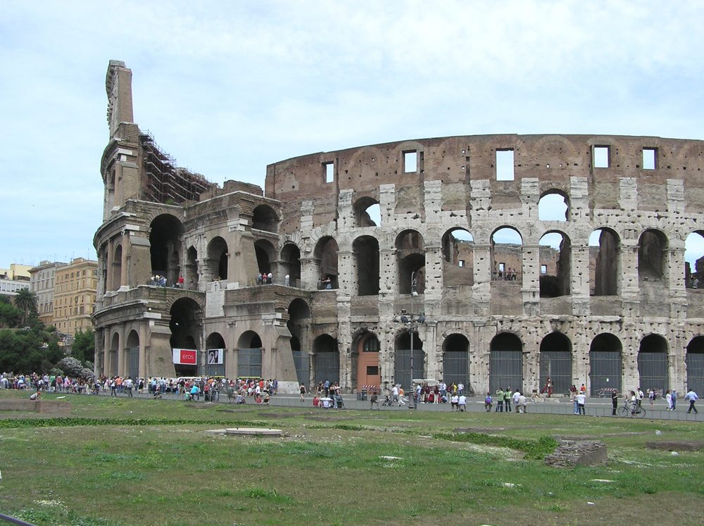

Місце народження: 28 грудня 2006 року, м. Київ.
Освіта: Закінчив гімназію №323 у місті Києві. Зараз навчаюсь на 3 курсі Національного технічного університету України «Київський політехнічний інститут імені Ігоря Сікорського» за спеціальністю 126 «Інформаційні системи та технології».
Найбільше з усіх міст, де мені довелося побувати, запам'ятався Рим — столиця Італії з понад двохтисячолітньою історією, де античні руїни сусідять із затишними вуличками сучасного мегаполіса. Колізей, Пантеон, Ватикан і фонтан Треві справляють неповторне враження, а тепла атмосфера міста робить його одним із найкращих місць для подорожей.
